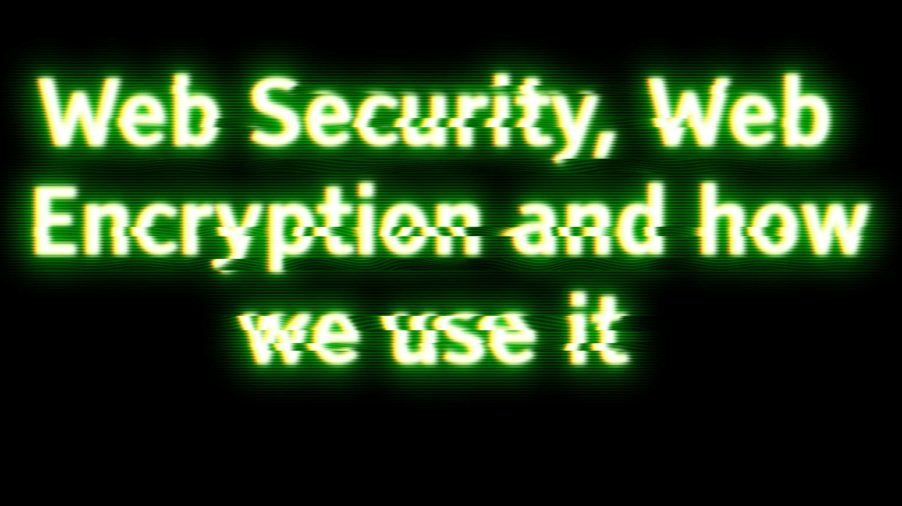

Encryption the story of security
Mitchal Graham
 image copyright © Mitchal
The idea of encryption began a very long time ago with the idea of cryptography and just trying to keep things a secret has been around for thousands of year, in fact it dates back even further than 600 BCE. Though its most known use was in World War II where Germany had made an invention called the enigma machine to confuse the allies, though they eventually got through it. Encryptions most useful purpose is not to stop the “allies” of the past but to stop the worst of people on the internet: cyber-criminals, black hat hackers and anyone who wants to know everything about you.
Web encryption is a very important as it is really the only way we can get data on the internet to another place safely, what encryption really is, is scrambling number and letters and then deciphering them, the act of unscrambling them to make sense again, this concept is only as good as the algorithms used such as the famous SHA (Secure Hash Algorithm) used in modern computing which uses a cryptographic hash function, takes an input and produces a hash value and this is a bit confusing at first but it can be helped by thinking of keys and locks.
A server has a thing called a public key that is capable of encrypting files and is sent to you and everyone so you can encrypt your files, but it is not capable of decrypting files but then how does the server read the encrypted text… it uses a private key made only for the server only accessible by the server and never accessible by you or anyone. But you need to encrypt things too… so your computer makes its own key and never ever gives its raw data, no your computer encrypts it using the public key and sends it to the server meaning an encrypted key is sent on the net to the server which is capable of decrypting it using its private key. There now both you and the server have a key and lock that no one else knows.
resources
- Frame of Essence. “Will Quantum Computers Break Encryption?
- “Encryption and HUGE Numbers - Numberphile.”
- Encryption. Wikipedia, Wikimedia Foundation